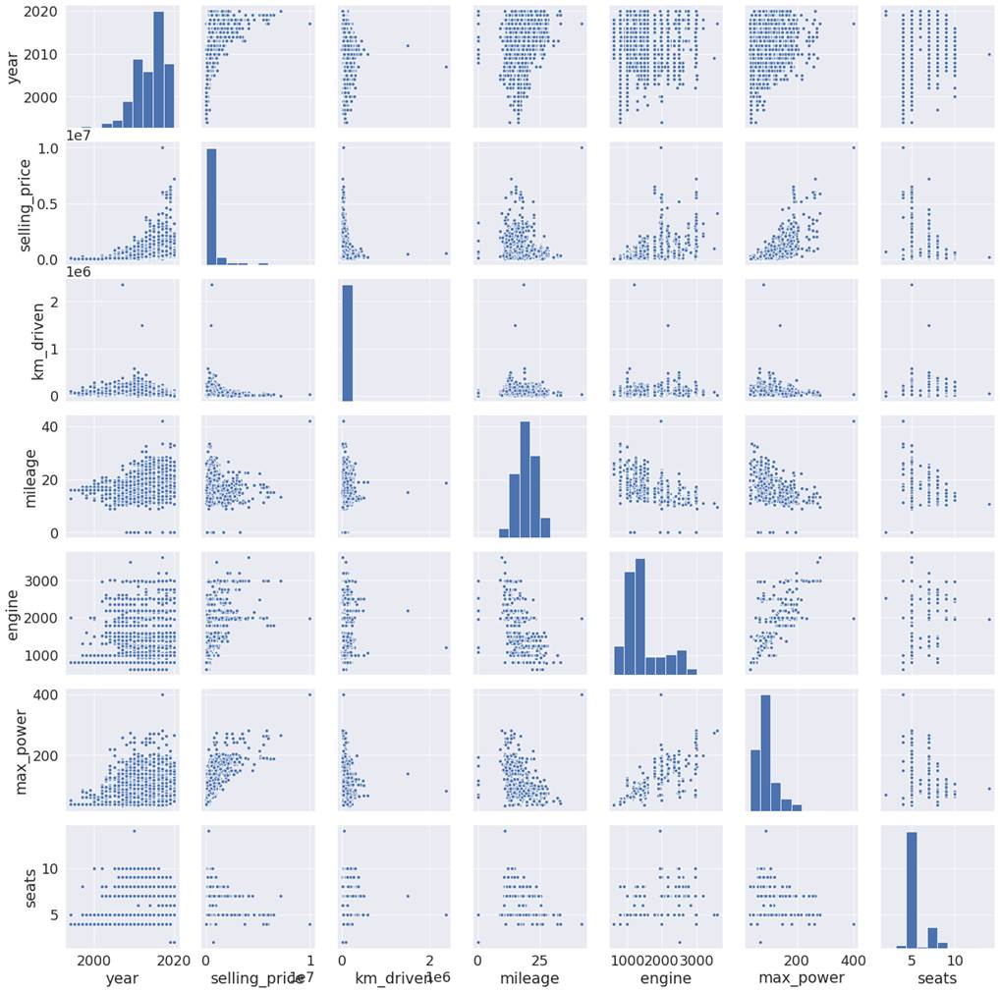
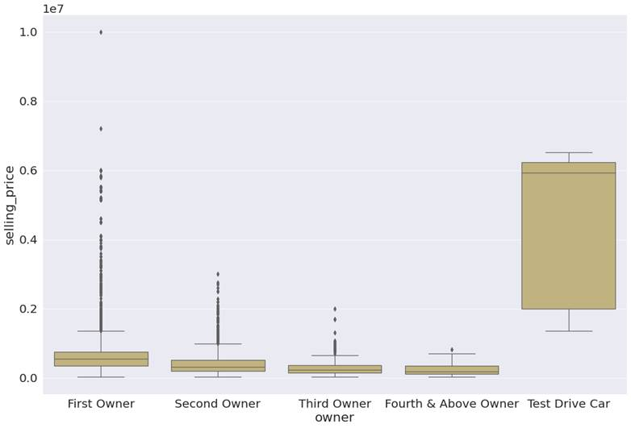
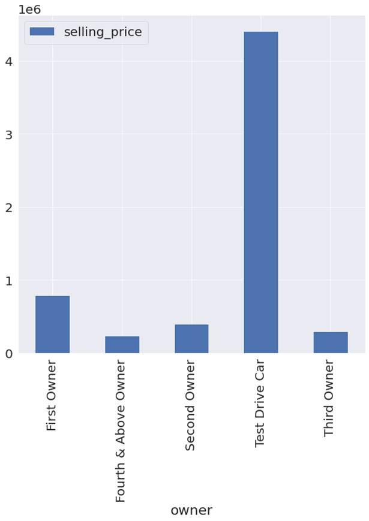
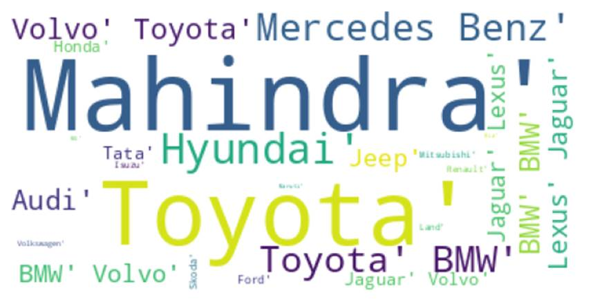

3.2: Car Sales
Dependent variable for this dataset
is numerical and the modeling problem is regression. Let's explore numerical
features through a pair plot in figure 3.2.1 and ask the 3 questions.
Question 1: What do the patterns in this visualization say?
It appears that there is a strong
relationship between the selling price of the car and the year since when the
car has been used. This is also observed for how many kilometers the car has
been used for. Interestingly, the car price has a not so strong impact on the
number of seats.
Max_power and engine have a strong
relationship with the selling price. Mileage also has some noticeable patterns.

Figure 3.2.1: pair plot of the
dependent variable with numerical features
Question 2: So, what does this pattern say about my problem
statement, and how it can affect my problem statement?
Let's confirm what we saw in the
first plot by quantifying the extent of the relationship by checking the
correlation heat map in figure 3.2.2.

Figure 3.2.2: Correlation heatmap of
numerical features with the selling price.
We can see that max_power has the
strongest correlation with the selling price, followed by the engine. Mileage
on the other hand has a mild negative correlation with the selling price of
used cars.
The selling price has a positive
correlation with the year. If the year is higher, then it can be sold for a
higher price. In other words, if the car is new, it can be sold for a higher
price. On the other hand, car price has a negative relationship with the number
of kilometers driven. If the car has been driven for long distances, it has
been through wear and tear. It is likely to fetch less price. Finally, the
number of seats has a weak positive correlation with the selling price. People
would like to have a car with a higher number of seats, but not so much.
Question 3: Now what should I do to inculcate the patterns
discovered during EDA? Should I include this information as a new feature or
should I perform data cleaning?
For the features which have a high
correlation, we can check if the original features give better performance or
if we can get better performance by using higher order features of these
features. This is even more applicable for seats. We will need to check if
there is any higher order feature for seats that can help us get better
performance.
If we go by common knowledge about
cars, the sports cars are sold at the highest price, although they have the
lowest number of seats. This is followed by SUV cars, which have a higher
number of seats but fetch higher prices. However, cars that have 4-5 seats are
used by middle class people and have a relatively lower selling price. Hence,
there is a non-linear relationship between the number of seats and car price.
This could also be applicable for used cars. Higher order feature engineering
might be able to uncover this non-linear relationship. We can also consider the
number of seats as ordinal and try higher order ordinal features to see if it
works better. Now, let's also explore categorical features.
Let's start with the owner
feature in figure 3.2.3. This
feature has values representing how many people have previously owned the car.
First Owner suggests that the car
is owned by a first-time buyer, whereas Second Owner means the car has been
owned by 2 owners, including the current owner. In our dataset, the first owner
and second owner are 65.9% and 25.5% respectively. They constitute the majority
group.

Figure 3.2.3: Boxplot of
selling_price for each type of owner
Question 1: What do the patterns in this visualization say?
There is a huge degree of variation
in prices at which used cars are sold for the first owner and second owners, as
evident from the number of outliers in the boxplot for these 2 categories. This
is also true for the third owner. Test drive cars and cars which have been
owned 4 times have relatively stable prices, as they do not have any outliers.
Cars that have been owned a fourth
time or above, fetch the lowest prices as evidenced by the average selling
price. This can be seen in figure 3.2.4.

Figure 3.2.4: Average selling price
by type of owner.
Question 2: So, what does this pattern say about my problem
statement and how it can affect my problem statement?
It seems that first, second, and
third-owner cars have lower average selling prices than test-driving cars.
However, many outliers have very high prices. We need to account for it.
Question 3: Now what should I do to inculcate the patterns
discovered during EDA? Should I include this information as a new feature or
should I perform data cleaning?
As this is common knowledge, we know
that sports cars and SUVs have higher prices than other cars. Let's verify this
by checking the car brand names from the brand
column for cars that have above 90 percentiles selling_price, through a word
cloud. Figure 3.2.5 has the word cloud for cars with higher percentile selling
price.

Figure 3.2.5: Brand names with above
90 percentiles selling_price.
Most of the cars for which
selling_price is outliers, are considered as premium and luxury cars in the
Indian market. If we could distinguish these cars from others while modeling,
it can give us comparatively better performance. We can represent this
information as a feature in 2 different ways. Firstly, we can create a binary
1|0 feature that represents these car brands as an additional feature.
Secondly, we can create a higher order feature, which will have the average
selling price for each car model or brand.